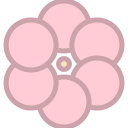
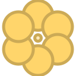

MERGE MEADOW · RUN (LANE RUNNER)
Run redizajn — 2 smjera
Pun ekran 1080 × 1920, bez hub chromea. Pravila iz §2 netaknuta: 60 s, 3 lanea na 25/50/75 %, swipe tween 0,12 s, spawn 1,2 s / 0,7, magnet 40 + 48 × level, fail 50 % / finish 100 % loota. Mijenja se samo izgled i feel.
Preporuka: smjer A
Ergonomija HUD-a ista u oba — razlika je tlo + chrome
1a
Smjer A — košene staze
Tamna livada, tri košene staze svijetlije od tla. HUD pluta u krem chipovima — nema trake, Run ne izgleda kao hub stranica. Pastel pickupi drže masu na tamnom tlu (isto mjerenje koje je odlučilo Arenu: #A8E6CF na kremu 1,34:1, na tamnom 9,3:1).
Mid-run · 42s · magnet Lv2
Start · prvih 2 s · bez Basketa
Tutorial · Pip cue · 45s
1b
Smjer B — svijetla livada + tamna traka
Zadržava postojeći lane_background.png ton — svijetle staze, nebo na rubovima. Cijeli HUD ide u jednu tamnu traku #1A241E iz UiChrome, pa je čitljivost garantovana na svih 8 sezonskih tintova. Najjeftinije za isporuku.
Mid-run · 42s · magnet Lv2
Start · prvih 2 s
Tutorial · Pip cue · 45s
Zašto A
Pickupi su svjetli pastel objekti. Na svijetlom tlu (B) gube masu — to je isti nalaz koji je već izmjeren za Arenu i zbog kojeg je sjemenka dobila tamni well. B to rješava tako da pickupima doda tvrdi outline i sjenu, ali onda Run vizuelno odstupa od Arene. Dodatno, puna tamna traka na vrhu (B) zauzima 372 px i čini da Run izgleda kao hub stranica — jedina stvar koja brief kaže da nije. A daje tamno tlo iz Arene, plutajuće krem chipove i isti sezonski tint mehanizam (modulate na tlu i preprekama, ne na HUD-u).
P1-3 · Pickup spec
CoinPickup · SeedPickup · DiamondPickup
CoinPickup · Ø 96
idle · bob ±10
collect · scale 1,28
fly-to-counter · 0,42 s
SeedPickup · Ø 120 · rim + well · isti objekat kao Arena SeedChip

★1 · čist krem rim

★2 · 2 lavanda pipa

★3 · 3 gold pipa
DiamondPickup · 88 × 88
idle · 1/300
Pravilo koje nosi grayscale test
Pickup = svijetli krug ≤ 120 px koji pluta (odvojena sjena 64 × 18 na +40 px). Prepreka = masa ≥ 176 px sa ravnom bazom i ovratnikom izgažene trave. Oblik i sjena razlikuju ih i bez boje.
Rijetkost sjemenke nikad ne mijenja vanjski krem rub — sjeme uvijek ostaje sjeme. ★ se čita brojanjem pipa (0 / 2 / 3, Ø 16 na radiusu 51), ne bojom — pa prolazi i grayscale i daltonizam. Dvije odbačene verzije: zlatni rim (★3 se na 120 px čita kao coin) i pun vs dashed prsten (razlika preslaba na 0,28 × zoomu).
P1-4 · Obstacle spec
Obstacle + ObstacleCollar · tijelo 176 × 150 u laneu 200
Stone
#A9AFA6 / #878C85
Stump
#9E7A52 / #735738
cap #B89466
cap #B89466
Hay bale
#D9C98A / #AEA06A
Zašto hay bale, a ne grm
Grm je zelen kao livada: #4A8250 na stazi #3A5C41 daje 1,8:1 — pada na grayscale testu iz §4.1. Sva tri motiva su namjerno nezelena i svjetlija od tla, pa silueta uvijek nosi čitljivost. Ovratnik izgažene trave je zajednički sloj i ide u sva tri asseta.
Otvoreno · jedina promjena brojeva koju predlažem
Danas je prepreka 64 × 64 (≈ 24 dp) uz collision 64 × 64. Nacrtano tijelo je 176 × 150. Ako vizual raste a hitbox ne, igrač prolazi kroz ivice. Predlog: collision 150 × 110 (13 px oproštaja po strani). Utiče na težinu — traži tvoju potvrdu.
Danas je prepreka 64 × 64 (≈ 24 dp) uz collision 64 × 64. Nacrtano tijelo je 176 × 150. Ako vizual raste a hitbox ne, igrač prolazi kroz ivice. Predlog: collision 150 × 110 (13 px oproštaja po strani). Utiče na težinu — traži tvoju potvrdu.
Season tint — SeasonTheme.obstacle_modulate(), već u kodu
country_bloom · 1,0
frost_orchard · .75/.88/1.12
ember_fen · 1.15/.72/.58
P1-5 · HUD komponente
smjer A · 1:1 u bazi 1080
TimerChip · fiksno 460 × 156 — kutija se ne mijenja između modova
42s
normal
Level 3
42s
level · Lv 3 · 42s → 2 reda
Endless · Hard
7s
endless · najduži string · prsten < 17 % ide peach
PickupBar · chip 190 × 120
12
5
1
Krem = ovaj run (coin, seed). Soft sky = wallet, odmah upisano (diamond) — chip se pojavljuje samo kad je > 0. Visina 120 px = 44 pt hit.
CompanionChip · BasketBadge · PauseButton
PIP
Pip
Clover
Portret je placeholder — Pip art postoji, ne redizajnira se. Basket: Clover → ikona + tip. Pause 128 px hit, gornji desni kut.
PickupFeed — fly-to-counter, ne 5 redova teksta
+1
+1
Meadow Clover
Coin i diamond: samo leteći +1 chip u brojač. Seed: chip + toast s imenom tipa (1,4 s), max 2 u stacku — ime tipa je jedina informacija koju chip ne nosi.
P1-6 · MagnetRing
radius = 40 + 48 × level · formula netaknuta
Level 0 · r 40
tanak solid prsten @ 20 %
Level 2 · r 136
dashed 7 px @ 42 % + fill @ 7 % + puls 1,8 s
Zašto prsten uopšte
§3.2 #4: igrač ne vidi šta je kupio. Prsten je jedino mjesto u igri gdje se magnet upgrade vidi — zato je dashed (čita se kao „polje", ne kao objekat) i zato pulsira samo kad je level > 0. Radius u mockupu je doslovno get_magnet_radius(): 40 / 88 / 136 / 184 / 232.
P1-7 · FailFlash · FinishFlash · PauseOverlay
kadar prije go_to_scene(LOOT)
Fail · 0,46 s
Freeze 0,20 s → shake ±14 px → flash #E88B8B @ 26 % → Pip −13° → 5 tokena se prosipa. Prosipanje je 50 % loota, prikazano a ne napisano.
Finish · 0,62 s
Prsten na 0 → mint burst iz TimerChipa → banner Time! → svijet staje u 0,3 s. Bez uzvičnika panike, bez brojanja bodova — to je loot ekran.
PauseOverlay
Predlog na otvoreno pitanje: Quit to Camp = fail loot (50 %), bez potvrde, bez revivea. Posljedica je napisana u panelu pa druga potvrda samo dodaje klik. Revive ostaje isključivo na loot ekranu.
P2-8 · LaneField detalj
lane 200 px · pitch 270 px · gap 70 px · centri 270 / 540 / 810
Tri signala, ne samo boja
1 · staza je svjetlija od tla · 2 · krem rub 4 px @ 20 % s obje strane · 3 · košene pruge svakih 124 px samo unutar staze, koje se kreću s scroll_speed i time pokazuju ramp. Između staza ostaje 70 px tamnog tla — to je ono što ih čini tri, a ne jedno polje. Pruge preko cijele širine su probane pa odbačene: spajaju tri staze u jedno polje.
Parallax: 2 sloja. Daleki = mekane mrlje @ 5 % na 0,35 × brzine. Bliski = čuperci i cvjetići u rubnim pojasima (0…170 i 910…1080) na 1,0 ×. Pruge su treći „sloj" ali žive na samoj stazi.
Reakcijski prostor: entitet je potpuno vidljiv od y ≈ 232 (ispod prvog HUD reda). Do igrača na y = 1574 ima 1342 px ≈ 3,3 s pri 400 px/s. TimerChip prekriva srednju stazu na vrhu, ali samo prvih 0,5 s putanje.
P2-9 · Tabela animacija
sve su tween na poziciji / skali / alphi — bez shadera
Ukupno: fail 0,46 s · finish 0,62 s prije go_to_scene(LOOT). Burst po pickupu je jedan prsten, ne čestice.
Tekstovi — stari → novi
P2-10 · Asseti za export
Van zadatka — nije u mockupu
Lane preview traka. 3 tanke tačke na dnu (nikako ne footer) koje pokazuju u kojem si laneu. Pomaže samo prvi run — vjerovatno ne treba.
Near-miss feedback. Kad prođeš 40 px od prepreke, ovratnik kratko zasvijetli krem. Bez mehanike, samo „bilo je blizu".
Basket streak. Kad Basket tip padne 3 ×, badge dobije mint puls. Vidljiva nagrada za loadout bez novog broja.
Ne bih: power-upi mid-run, 4. lane, boss. Svaki od njih dodaje HUD sloj u ekran koji je upravo postao čitljiv, a Pillar 2 ne traži ništa od toga.